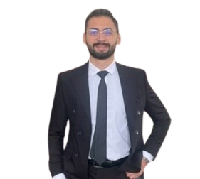

YEHYA EL AKOUM

Solution Expert at Lexzur Company. I work onsite at Dubai Police. I am a results-oriented graduate in Computer Communication Engineering with a strong academic background and hands-on experience in the telecommunications industry. I have demonstrated skills in cabling and jointing, Wi-Fi technologies, VoIP, and smart city solutions. I hold certifications in Cisco networking and have a proven track record of successful volunteer work as a paramedic. I am proficient in programming languages such as Python, Java, and C/C++, and I have a solid understanding of MATLAB and networking tools. As a collaborative team player, I possess excellent analytical and problem-solving skills. I am fluent in Arabic and proficient in English, with intermediate skills in French.
Education
Bachelor’s degree in Computer Communication Engineering with honors
American University of Science and Technology (AUST), Beirut, Lebanon2019 - 2023
Lebanese Baccalaureates in General Sciences Ranked 1st among the graduating class
Aanout High School, Aanout, LebanonJul 2018
Experince
Solution Expert
Lexzur, Dubai, UAE / Jul 2024 - Present
• Collaboration with Legal Teams: As an IT Solution Expert, collaborated closely with legal professionals at Dubai Police to ensure the smooth integration and operation of technology within legal workflows, with a focus on contract management.
• Application Support and Problem Solving: Managed the company’s application, Contra, which is essential for signing and managing contracts. Provided guidance and support to users, addressing issues or errors related to the database, server, or application code.
• Workflow Management: Assisted in the workflow cycle for contract approvals, ensuring all necessary signatures were obtained. Facilitated the efficient processing of contracts to meet operational requirements for Dubai Police.
Web Developer - Project Manager
Macrosoftdev, Lebanon / Jan - Apr 2024
• Created a comprehensive proposals and contracts for Abdulbakiaudit project, that outline the scope deliverables, and terms of web development project ensuring that all parties involved have a clear understanding of the project requirements and expectations.
• Took charge of maintaining effective communication and regular follow-up with clients, team members, and stakeholders throughout the project lifecycle and ensured that the project milestones are met, addressed any concerns or issues promptly, and kept everyone informed about the progress of the web development project.
• Collaborated with web developers and designers to ensure that the website is aligned with the client's vision and incorporates best practices in web development and overseed the implementation of features, functionality, and user experience to deliver a high-quality website.
• Hosted the website online and taking it live on the following link: abdulbakiaudit.com.
Telecommunication Intern
Ogero, Beirut, Bir El Hassan, Lebanon / Jan - Mar 2024
• Developed expertise in diverse aspects of infrastructure deployment, including meticulous cabling and jointing techniques, precise execution of civil works, and proficient installation of cables, both underground and aerial, ensuring optimal network performance and durability.
• Demonstrated advanced proficiency in conducting comprehensive OSP electrical tests, meticulously mapping network layouts, implementing effective earthing strategies, and adhering to industry-leading Wi-Fi standards such as 802.11 a/b/g/n, ensuring robust and reliable connectivity across network infrastructure.
• Leveraged hands-on experience to configure access points with precision, while deepening knowledge in cutting-edge technologies such as DSL, ADSL, VoIP, and SIP protocol. Additionally, gained insight into the integration of smart city technologies, contributing to the development of innovative and interconnected urban environments.
• Advanced proficiency in FTTX Network, Fiber Optic Evolution, Topology, and Network Design.
Telecommunication trainee
Ogero, Sidon, Lebanon / Oct - Nov 2021
• Acquired hands-on experience in cabling and jointing, civil works, and installation of cables (underground & and aerial)
• Gained Proficiency in OSP electrical tests, mapping, earthing, and Wi-Fi standards (802.11 a/b/g/n)
• Configured access points, and gained knowledge in DSL, ADSL, VoIP, SIP protocol, and smart city technologies.
Contact Information
Email:
yehyaakoum11@gmail.com
yehya.akum@lexzur.com
Phone:
+9710557920401
+96103225214